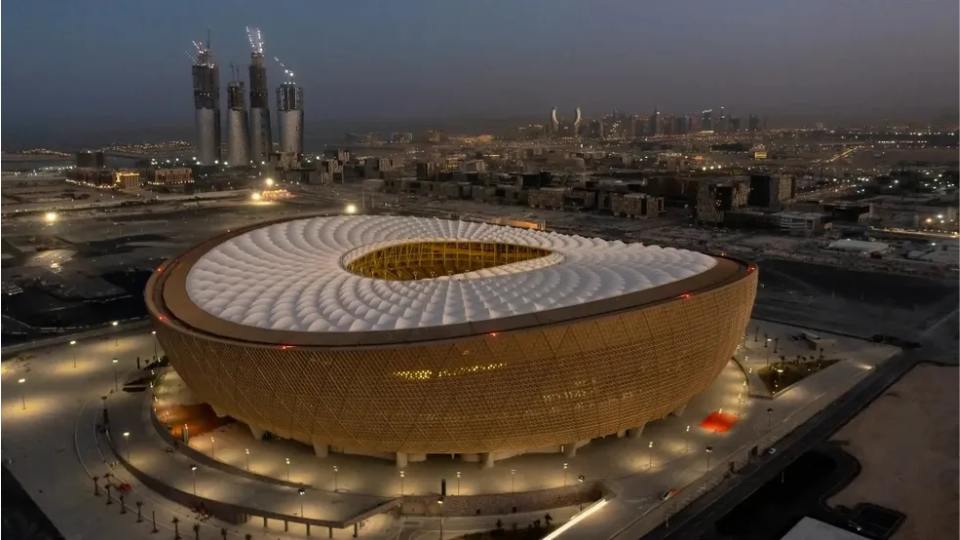
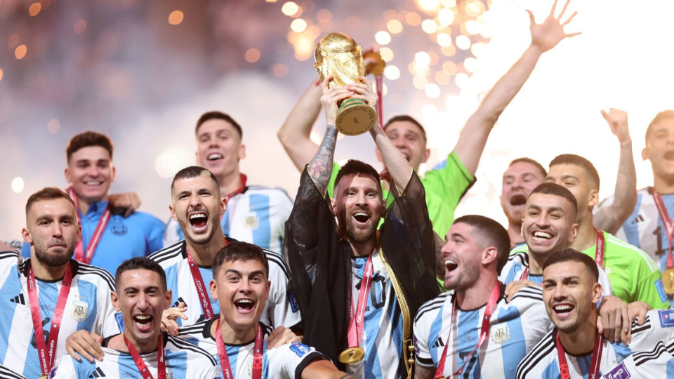

Ainda com os impactos da pandemia de COVID-19, iniciada em 2020, que havia provocado uma das maiores crises sanitárias e econômicas da história recente, o Catar sediou a copa de 2022. Muitos países lidavam com inflação elevada, rupturas nas cadeias globais de produção e mudanças no mercado de trabalho, enquanto a digitalização acelerada consolidava o uso de serviços online, trabalho remoto e novas formas de consumo de mídia.
O Catar, país-sede do torneio, é um pequeno Estado do Oriente Médio governado pela família Al Thani, com sistema político de monarquia absolutista. Com cerca de 2,8 milhões de habitantes (a maioria composta por trabalhadores estrangeiros) e um dos maiores PIB per capita do mundo, estimado em mais de US$ 60 mil, o país possui uma economia fortemente baseada na exploração de petróleo e gás natural.
A escolha do Catar como sede foi parte de uma estratégia de projeção internacional conhecida como “soft power”, utilizando o esporte para ampliar sua influência global e diversificar sua economia, reduzindo a dependência dos hidrocarbonetos. O país também buscava se consolidar como centro de eventos esportivos e turísticos no Oriente Médio.


Os investimentos para a Copa de 2022 foram os maiores da história do torneio, ultrapassando US$ 200 bilhões, com destaque para a construção de estádios totalmente novos, como o Estádio Lusail, além de uma ampla modernização urbana. Foram construídos sistemas de metrô, novas rodovias, aeroportos ampliados e cidades inteiras planejadas, como Lusail City. A infraestrutura foi projetada para suportar o evento e também para o desenvolvimento urbano de longo prazo.
O legado da Copa do Catar é complexo e ainda em debate. Por um lado, o país obteve enorme projeção internacional e acelerou sua transformação urbana e tecnológica. Por outro, o evento foi alvo de críticas relacionadas às condições de trabalho de imigrantes, ao alto custo das obras e ao impacto ambiental de construções em larga escala em um país de clima extremamente quente.
De forma geral, o principal legado da Copa de 2022 foi a consolidação do uso do esporte como instrumento de poder e diplomacia no século XXI, além de reforçar o papel do Oriente Médio como uma região estratégica em disputas econômicas e políticas globais.
A final foi disputada no Estádio Lusail, diante de aproximadamente 88 mil espectadores. A seleção da Argentina conquistou seu terceiro título mundial ao derrotar a França em uma final histórica, empatada por 3 a 3 no tempo normal e decidida nos pênaltis.